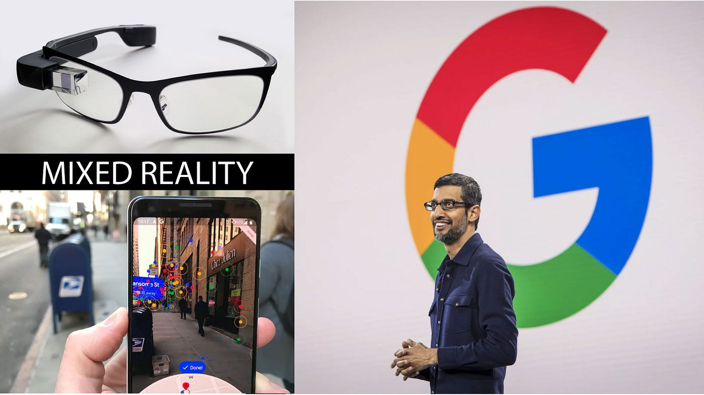

Apr 17
Google is reiterating its android strategy in Mixed reality

Google is trying to implement the strategy that made it become the main player in the smartphone market revolution, a strategy that was about making public a mobile operating system that any smartphone manufacturer could use for offering their own range of smartphone products to the market.
One could expect that what happened with the PC and Smartphone market will also happen to the mixed reality devices market meaning many brands of OEM manufacturers will try to offer VR and MR devices to consumers, each of these OEM manufacturers will try to target a specific segment of this market based on prices and quality. The same behavior happened for almost all major categories of innovative hardware like radio and TVs once made public.
Google is positioning itself as the company that will make the mixed reality hardware market open to any OEM hardware venture who will be willing to offer a device in the marketplace while other big tech players are going after a closed mixed reality hardware solution with their proprietary MR operating system that will likely embed each a mixed reality application marketplace like google did with play store and Apple with Apps Store because MR and VR apps will be a thing for all developers and startups like how mobile applications are actually.
Manufacturers of the low-cost smartphone market era like Samsung and others will wait for google to open the way with its mixed reality operating system for them to design and build mixed reality hardware based on what will be an open mixed reality hardware architecture that will make this technology accessible to a broader audience. Google executed this same tactic with the android OS but my guess is that Microsoft will also make the operating system that will fuel its mixed reality device to other hardware partners because that’s this strategy that made it successful as a startup trying to be the leader of personal computers’ operating system even if this strategy failed in front of Android for the smartphone device market in which Microsoft failed to nurture a leading mobile operating system.
Then we could expect a very hard competition between Google and Microsoft in the mixed reality space but it is less likely for Apple to follow them in this strategy of targeting mass-market mixed reality hardware because we all know how Apple cares about a differentiating strategy that seeks premium price and high margin by exploiting a tiny portion of the market willing to buy expensive tech products for sure well designed and its unwillingness to make its proprietary technology open to others tech players.
In fact, the mixed reality strategy of google is clear for anyone who sees the tech competition using past tech competitive dynamics. This strategy is again to make a mixed reality operating system open to all mixed reality device manufacturers because MR devices are also entry points of incoming searches from users and search is the core business of Google.
We all have seen how search volumes have migrated from PC to Mobile then given the possibility of mixed reality devices being mass used devices like smartphones are now we could expect the same migration of search volumes to happen from smartphones to these newly adopted mixed reality devices. Consumers may always have one mixed reality device with them wherever they are in order to customize their real-life experience for it to fit their actual goal and we know that we people are always searching for something wherever we are then it is not foolish to think that with these mixed reality devices, people will make searches even if we cannot say now in what form these searches will be done and presented. Google could be at risk if it fails to find a way to be a key player in this era of widely adopted mixed reality hardware and this risk is amplified if it happens that these devices disrupt smartphone usage. A world in which mixed reality devices are more used than smartphones is not impossible at all. Google unlike other tech players could not stay blind and silent about mixed reality because it is its core business, search, which is at risk if this technology is broadly adopted by consumers like us.
If Google fails to chip a popular mass-market mixed reality hardware, it should have the possibility to partner and work with one or more hardware manufacturers and Google can't rely on Microsoft, Apple, or Amazon for this collaboration. The only way for google to have a second change is to open the market to other tech players big and small for it to have more opportunities to partner with one major mixed reality hardware or to benefit from the long tails strategy of exploiting many mid-size hardware manufacturers using its mixed reality operating system and likely also its mixed reality applications marketplace. Apart from its search engine, Google has not the habit of producing closed systems but in the case of mixed reality, this openness will just give google more chance to protect itself from a possible change in the medium that users will use to make searches.
For the personal computer market, google avoided going after a strategy of offering an operating system because years before Netscape made browsers become a distinct offering from the operating system of PC users with even manufacturers forced to suggest other browsers due to antitrust laws and concerns. This early initiative of Netscape prepared the ground for google to not go after the PC operating system path and limited itself to be part of the key players in the browser solution market because browsers are the entry points of searches for PC users, not the operating system since users are free to pick and use the browser they want. We could highlight that during the laptop revolution google tried Chrome Os a light operating system mainly designed for laptops but this OS failed to be a key leader in this market in front of Microsoft windows because the switching cost was very high for users. It was easier for desktop users to buy laptops equipped with the same operating them as their desktops.
Given subsequent views, there is no way for google to not try to open the mixed reality device market to those who volunteer to come up with their own hardware. The history and past competitive dynamics show that it is very likely that there will be hardware brands that will offer low-cost mixed reality devices to consumers, and low cost is a very difficult strategy to sustain but it is a strategy that will always have a big room in consumers choices because of people’s needs for saving money and having more buying power.
To conclude we could say that The implementation of this strategy comes in the form of an open mixed reality operating system that makes it easy to create a new brand of MR hardware with an embedded mixed reality marketplace that will make it easy for any developer of startup to build and offer mixed reality apps to consumers. By doing this google will open the Mixed reality hardware opportunity to any hardware entrepreneurs and brands and the whole community of startups and apps developers but again Microsoft is like to follow the same strategic path and we have Facebook which will challenge them with all the effort that this tech company is spending in Oculus VR. But I see so many opportunities in mixed reality for startups like Airbnb and others who are silent about how they will gonna do with this coming revolution of mixed reality.
PS: This article was about highlighting the strategies and possibility of all of these big tech companies in the mixed reality space but ended up being only about google because it would be too long. I will share with you the articles about Microsoft, Apple, and Airbnb in the coming days.